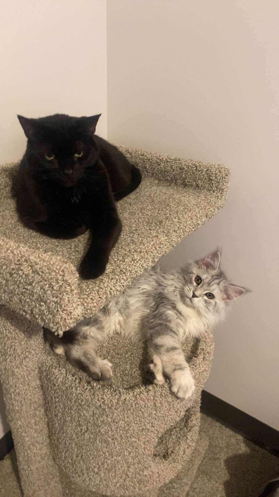
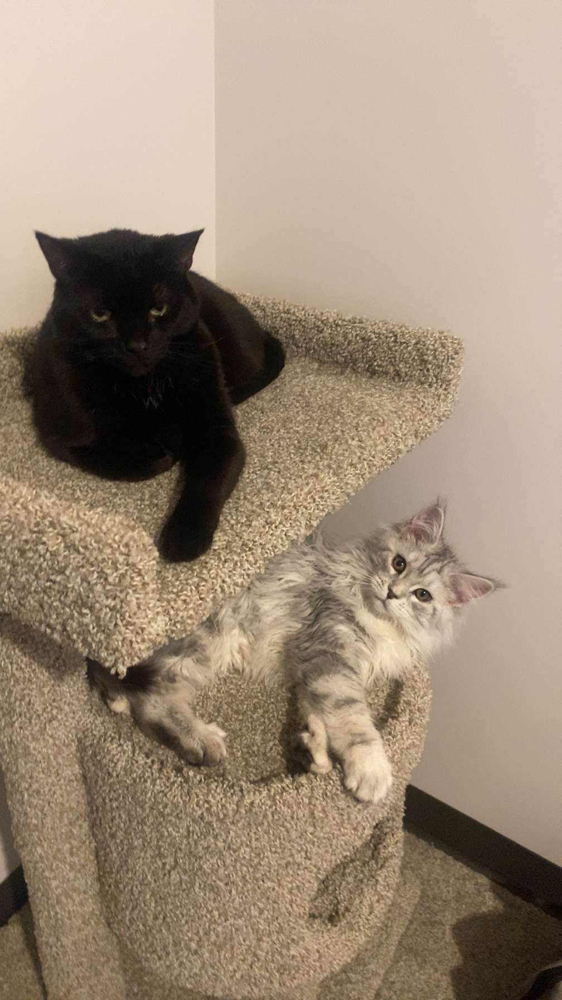
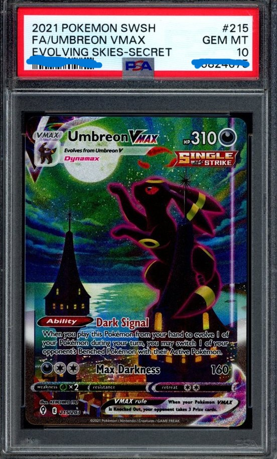
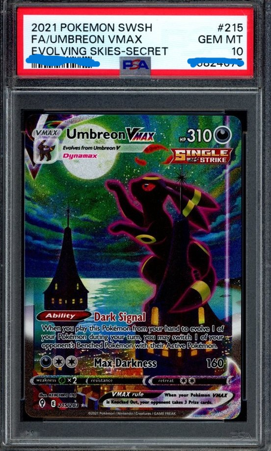

About Me
Hello, I'm Tony and this web page is dedicated towards showing who I am!
Hobbies
I have a large variety of hobbies that I enjoy!
The ones I can list on the top of my head are golf, fishing, Pokémon, and investing.
Pets
I have 2 cats that bring me company.
My oldest one is Binx, she is an all-black domestic short hair who is currently 4 years old
My youngest one is Anya, recently flew her in from Ukraine, she is a silver-white 4-month-old Maine Coon
Photos
 

 
